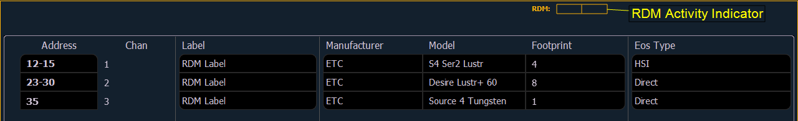
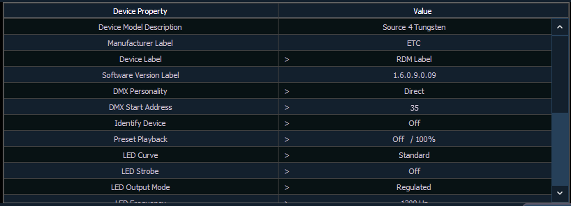
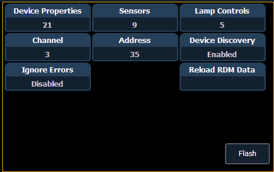

Before you can start using the RDM Device List, you must first enable {RDM} for the appropriate DMX ports in Setup>System>Output, or for the appropriate ethernet ports in the Network ECU tab. By default RDM is disabled. See Outputs or Interface Protocols If using Network RDM, this must be done via an ETC Net3 Gateway and RDM must also be enabled on the DMX ports of the Gateway. The Gateway needs to be running version 5.1 or newer.
Open the RDM Device List while in the patch display by pressing {Device List}> {RDM}.
You will need to make sure that {Device Discovery} is enabled.
{Device Discovery} is disabled by default. The {Device Discovery} option will not display if {RDM} is disabled in the ECU.
Note: {Device Discovery} will automatically disable when you leave the patch display.
When the RDM device list is opened, the devices will be displayed in Patch by Address mode. At the top of the list is a RDM indicator. This indicator shows incoming and outgoing RDM traffic.

Element will display the following information that it receives from the RDM devices:
Element will also display what personality from the library the device matches in the Eos Type column. This information will not display until you first select the device. Once the device has been selected for the first time, Element will extract the type information from the device and display it.
With a device or devices selected, you can edit various device settings in the property view, which will display in the CIA. Items with a caret (>) are editable. When multiple devices are selected together for editing, an “*” will show for data that is different between the selected devices.

The following buttons will also display in the property view:
